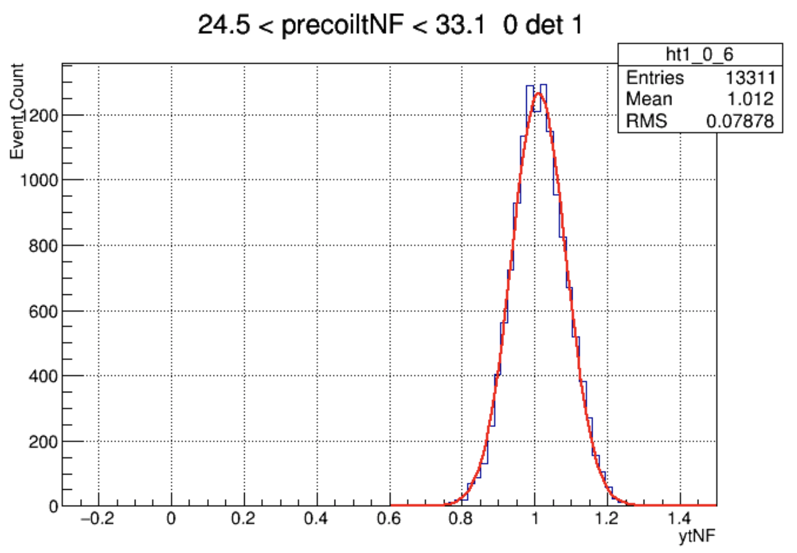
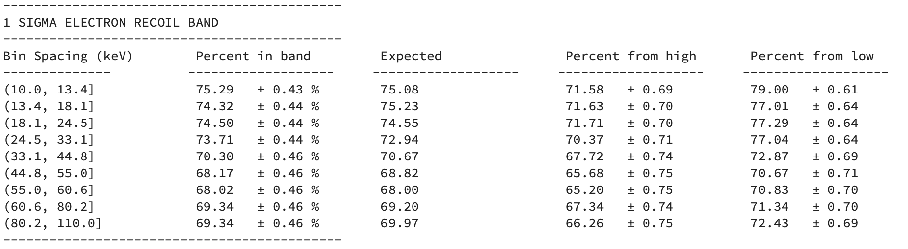

In the current model, the yield for the electron recoil band is being
simulated assuming that the charge energy \(E_q\) and the phonon energy \(E_p\) are independent.
$$E_p = E_{er} + VN_{eh}$$
Where
$$N_{eh} = \frac{E_{er}}{\epsilon}$$
To make sure that the measured values for \(E_p\) and \(E_q\) are generated independently, we randomly sample from distributions for \(E_p\) and \(E_q\) that were generated using the phonon and charge resolutions from cdms:
$$E_{p_{m}} = random.normal(E_p,\sigma_p)$$
$$E_{q_{m}} = random.normal(E_{er},\sigma_q)$$
Where \(E_{p_m}\) and \(E_{q_m}\) are the measured values.
The measured recoil energy is then:
$$Er_{m} = E_{p_m} - \frac{E_{q_m}V}{\epsilon} $$
The yield is therefore:
$$Y = \frac{E_{q_m}}{Er_m}$$
Expected Distribution (CDMS)
When fitting the data from CDMS, the collaboration assumed that the distribution for electron recoils is normally distributed:

The bands that CDMS use are generated under this assumption. However, if we look at the containment fractions for the
\(1\sigma\) CDMS bands with simulated data, we see that the assumption of normality isn't correct:

Looking at the amount of data in each energy bin, we can see that the amount of data in each bin, "Percent in band", is to high. If they were normally distributed,
we would expect to see \(68\%\) in each bin. The distribution in each bin is also postivly skewed. This can been see by the "percent from high" and "percent from low"
catagories.
Expected Probability Distribution (Ratio of Gaussians)
As mentioned, CDMS assumes that the distribution for the electron recoil band is normally distributed. As shown above, we can see that this not the case.
It turns out that the distribution for the ratio of two normally distributed independent random variables with non-idential non-zero means is not a normal distribution.
As a reminder, the Yield for the electron recoil band is:
$$ Y = \frac{E_{q_m}}{Er_m} = \frac{E_{q_m}}{E_{p_m} - \frac{E_{q_m}V}{\epsilon}} $$
It tuns out that the pdf for the yield is quite complicated. If we let \(x = E_q\) and \(y = E_p-kE_q\), then our variable of interest is \(z = \frac{x}{y}\)
We first need the joint Probability distribution for \(x\) and \(y\):
$$X_{pdf}(x) = \frac{1}{\delta_x\sqrt{2\pi}}e^{-\frac{(x-\mu_x)^2}{2(\delta_x)^2}}
\\
Y_{pdf}(y) = \frac{1}{\sqrt{(\delta_p^2+\delta_x^2)2\pi}}e^{-\frac{(y-(\mu_p-k\mu_x))^2}{2(\delta_p^2+\delta_x^2)}}
$$
Here, \(\delta_x\) and \(\delta_p\) are the sample standard deviations, and \(\mu_x\) and \(\mu_p\) are the sample means, for \(x\) and \(y\) respectivly.
The joint pdf for \(x\) and \(y\) is:
$$ XY_{pdf} = \frac{1}{2\pi\delta_p\delta_x}e^{-(\frac{(x-\mu_x)^2}{2\delta_x^2} + \frac{(y-(\mu_p-k\mu_x))^2}{2\delta_p^2})} $$
The pdf for \(z\) is:
$$ Z_{pdf}(z) = \int_{-\infty}^{\infty}|t|XY_{pdf}(zt,t)dt $$
$$ XY_{pdf} = \frac{1}{2\pi\delta_p\delta_x} e^{-c(x,y)} \rightarrow Z_{pdf}(z) = \frac{1}{2\pi\delta_p\delta_x}\int_{-\infty}^{\infty}|t|e^{-c(zt,t)}dt $$
(NEED TO TALK TO ARVIND ABOUT THE DUMMY VARIABLES)
The details of evaluating the integral for \(Z_{pdf}(z)\) can be found in Arvind's note. see: (). The soultion for \(Z_{pdf}(z)\) is:
$$ P_z(z,\mu_p,\mu_x,\delta_p,\delta_x) = Ae^{\frac{1}{2}((\frac{\mu_x}{\delta_x})^2 + (\frac{\mu_p}{\delta_p})^2)} + Be^{C} +Erf(D)$$
$$ A = \frac{1}{\pi(z^2(\frac{\delta_p}{\delta_x})+(1+kz)^2(\frac{\delta_p}{\delta_x}))}$$
$$ B = \frac{\frac{\delta_p}{\delta_x}(z\frac{\mu_x}{\delta_x}\frac{\delta_p}{\delta_x} + (1+kz)\frac{\mu_p}{\delta_p})}{\sqrt{2\pi}(z^2(\frac{\delta_p}{\delta_x})^2+(1+kz)^2(\frac{\delta_p}{\delta_x}))^\frac{3}{2}}$$
$$ C = \frac{(z\frac{\mu_p}{\delta_p}\frac{\delta_p}{\delta_x}-(1+kz)\frac{\mu_x}{\delta_x})^2}{z(z^2(\frac{\delta_p}{\delta_x})^2 + (1+kz)^2)} $$
$$ D = \frac{z\frac{\mu_x}{\delta_x} + (1+kz)\frac{\mu_p}{\delta_p}\frac{\delta_x}{\delta_p}}{\sqrt{2(z^2 + (1+kz)^2(\frac{\delta_x}{\delta_p})^2)}} $$